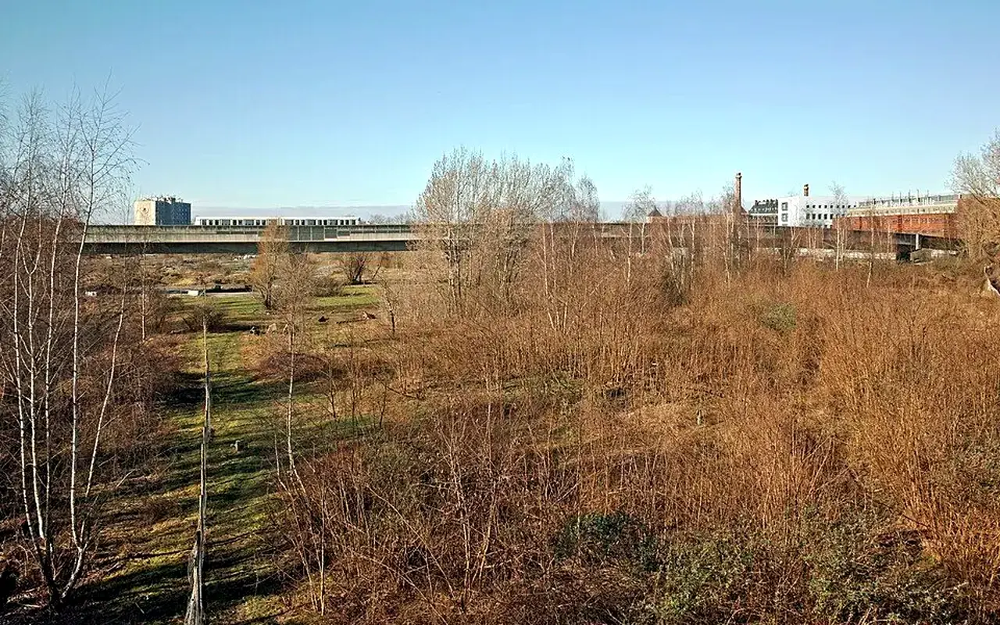

Dossier public
Antennes locales
Structurer des fiches standard pour structurer l'déploiement inscrit dans la feuille de route des antennes locales, sans annoncer d'antenne active non validée.

Saint-Étienne
Territoire de référencePrésentation : territoire de lancement national.
Responsable : gouvernance précis’e dans Transparence.
Projets : observatoire local, matériaux, friches, mobilisation.
Besoins : bénévoles, repérage, partenaires locaux.
Martinique
Déploiement inscrit dans la feuille de routePrésentation : développement à étudier avec les acteurs locaux.
Responsable : à dèsigner.
Projets : à qualifier.
Bénévoles recherchés : référents et relais territoriaux planifiés.
Guadeloupe
Déploiement inscrit dans la feuille de routePrésentation : territoire pressenti pour une structuration inscrite dans la feuille de route.
Responsable : à dèsigner.
Projets : à qualifier.
Besoins : diagnostic, bénévoles, partenaires.
Réunion
Déploiement inscrit dans la feuille de routePrésentation : territoire à intégrer à la stratégie nationale.
Responsable : à dèsigner.
Projets : à qualifier.
Bénévoles recherchés : à définir.
Guyane
Déploiement inscrit dans la feuille de routePrésentation : territoire à étudier avec prudence et partenaires locaux.
Responsable : à dèsigner.
Projets : à qualifier.
Besoins : analyse territoriale et relais locaux.
Table antennes
Champs prévus : nom, territoire, presentation, responsable_id, projets_resume, besoins, benevoles_recherches, statut, coordonnees, created_at.
Antennes locales : passer d’une ambition nationale à une capacité d’action territoriale
Une plateforme nationale ne peut pas fonctionner uniquement depuis un siège. La vacance, les friches et le réemploi exigent une connaissance de terrain : rues, propriétaires, artisans, associations, élus, bailleurs, entreprises, contraintes foncières et besoins sociaux. Les antennes locales doivent donc devenir des relais de confiance, formés et outill’s.
Les programmes de l’ANCT montrent que la revitalisation concerne à la fois les villes moyennes, les petites centralités et les outre-mer. TVF doit structurer une méthode duplicable : candidature, diagnostic, référents, convention, formation, outils communs, gouvernance, reporting et protection des données.
Carte des antennes planifiéesStatuts prévus : intérêt reçu, diagnostic en cours, référent identifié, convention, antenne active.
Méthode de création d’une antenne
1. Candidature
Comprendre le territoire, les personnes engagées, les besoins et la capacité à animer localement.
2. Diagnostic
Identifier logements, commerces, friches, matériaux et acteurs compétents.
3. Convention
Clarifier responsabilités, usage de la marque, données, reporting et règles de publication.
Une antenne peut-elle agir seule ?
Non. Elle doit respecter la méthode nationale, la validation des données et les règles de gouvernance.
Pourquoi commencer par Saint-Étienne ?
Parce que le siège national y est bas’ et que le territoire présente des enjeux cohérents avec l’objet de l’association.
Quand afficher une antenne comme active ?
Uniquement lorsque référent, périmètre, cadre de fonctionnement et validation interne sont établis.
Sources citéesANCT, Action cœur de villeANCT, Petites villes de demain
Pour les antennes planifiées : une méthode nationale, des priorités locales
Le déploiement territorial doit rester progressif. Une antenne locale ne se crée pas seulement avec un nom : il faut des personnes référentes, un diagnostic, un cadre de données, des partenaires confirmés et une capacité de suivi.
Candidature
Décrire le territoire, les besoins observés, les personnes mobilisables et les sujets prioritaires.
Validation
Vérifier la compatibilité avec les statuts, la charte, la gouvernance et les capacités nationales.
Lancement
Former les référents, fournir les outils, encadrer la communication et suivre les premières actions.
Cadre commun : toute coopération doit préciser les objectifs, responsabilités, moyens, données publiables et conditions de suivi.
Structurer une antenneCe que cette page permet de décider
| Point à comprendre | Application pour Antennes locales | Document ou action utile |
|---|---|---|
| Besoin traité | Clarifier le sujet, le public concerné et les limites d'intervention. | Fiche de lecture et sources. |
| Cadre de coopération | Identifier les parties, les responsabilités, les pièces et les conditions de validation. | Trame de convention ou fiche projet. |
| Passage à l'action | Orienter vers le bon parcours sans multiplier les démarches. | Formulaire, contact ou document téléchargeable. |
Stratégie nationale
Du constat à l'action : Antennes locales
Cette page situe le sujet dans une trajectoire de deploiement progressif, documente et duplicable.
Problème
Les besoins sont nationaux, mais les solutions doivent etre construites territoire par territoire.
Donnée utile
Repere public : les politiques de revitalisation, sobriete fonciere et transition écologique exigent des preuves locales.
Solution TVF
TVF assemble une méthode duplicable : diagnostic, acteurs, convention, ressources, financement et impact.
Méthode
Le deploiement part de Saint-Étienne, puis s'élargit uniquement avec des relais, données et capacités confirmees.
Acteurs
Collectivités, État, entreprises, associations, propriétaires, financeurs, benevoles et habitants.
Impact visé
Construire une plateforme utile, lisible et mesurable pour plusieurs territoires sans annoncer de résultats fictifs.
FAQ
Questions utiles avant d'agir
Des réponses courtes pour comprendre le cadre, les limites et la prochaine action possible.
Que faut-il vérifier avant toute action ?
Le propriétaire, le droit d'usage, l'état du lieu ou de la ressource, les risques, l'assurance, les autorisations, le budget, le calendrier et les responsabilités.
TVF annonce-t-elle des résultats avant validation ?
Non. Les partenaires, projets, montants, matériaux affectés et impacts ne doivent être publiés qu'après vérification, accord et traçabilité.
Quelle est la prochaine étape ?
La prochaine étape consiste à documenter la situation, transmettre les informations utiles et choisir le bon parcours : Lire la méthode.
Passer à l’action
Choisir le parcours adapté à votre rôle
Chaque demande doit être orientée vers un cadre clair : besoin territorial, propriétaire, ressource, financement, bénévolat ou coopération institutionnelle.